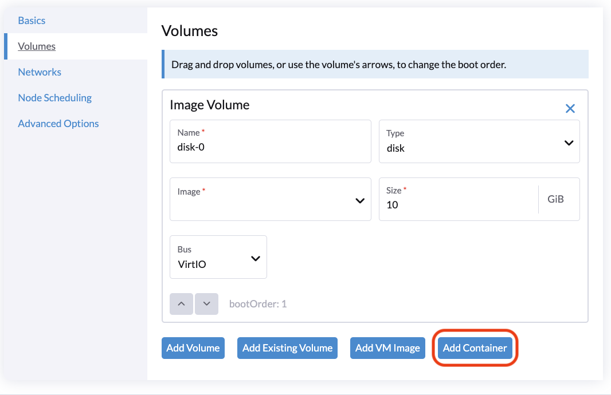
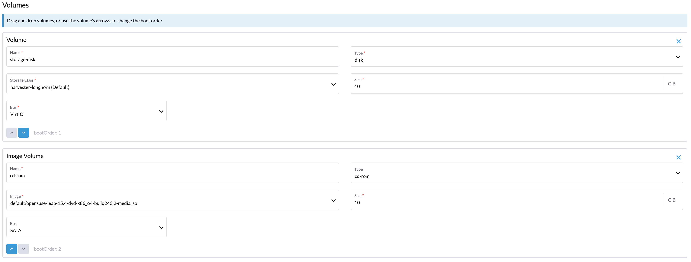

|
Ce document a été traduit à l'aide d'une technologie de traduction automatique. Bien que nous nous efforcions de fournir des traductions exactes, nous ne fournissons aucune garantie quant à l'exhaustivité, l'exactitude ou la fiabilité du contenu traduit. En cas de divergence, la version originale anglaise prévaut et fait foi. |
Créer une machine virtuelle
Comment créer une machine virtuelle
-
UI
-
API
-
Terraform
Vous pouvez créer une ou plusieurs machines virtuelles à partir de la page Machines Virtuelles.
|
Veuillez vous référer à cette page pour créer des machines virtuelles Windows. |
-
Choisissez l’option de créer une ou plusieurs instances de machines virtuelles.
-
Sélectionnez l’espace de noms de vos machines virtuelles, seul l’espace de noms
harvester-publicest visible par tous les utilisateurs. -
Le nom de la VM est un champ requis.
-
(Optionnel) Le modèle de VM est facultatif, vous pouvez choisir le modèle
iso-image,raw-imageouwindows-iso-imagepour accélérer la création de votre instance de machine virtuelle. -
Dans l’onglet Généralités, configurez les paramètres suivants :
-
CPU et Mémoire : Vous pouvez allouer un maximum de 254 vCPUs. En tant que meilleure pratique, assurez-vous que le nombre de vCPUs alloués à chaque machine virtuelle ne dépasse pas le nombre de threads de processeur physique disponibles sur l’hôte. Si les machines virtuelles ne sont pas censées consommer pleinement les ressources allouées la plupart du temps, vous pouvez utiliser le paramètre
overcommit-configpour optimiser l’allocation des ressources physiques. -
Clé SSH : Sélectionnez des clés SSH ou téléchargez de nouvelles clés.
-
-
Sélectionnez une image de VM personnalisée dans l’onglet Volumes. Le disque par défaut sera le disque racine. Vous pouvez ajouter d’autres disques à la machine virtuelle.
-
Pour configurer les réseaux, allez dans l’onglet Réseaux.
-
Le Réseau de gestion est ajouté par défaut, vous pouvez le supprimer si le réseau VLAN est configuré.
-
Vous pouvez également ajouter des réseaux supplémentaires aux machines virtuelles en utilisant des réseaux VLAN. Vous pouvez configurer les réseaux VLAN sur Réseaux avancés → en premier.
Si la machine virtuelle a une interface connectée au réseau
mgmtet une autre connectée à un réseau VLAN, le nœud peut ne pas être en mesure d’atteindre l’adresse IPmgmtde la machine virtuelle. Ce problème de connexion se produit lorsque la passerelle de l’autre réseau remplace la route par défaut de la machine virtuelle, entraînant un routage qui privilégie le réseau VLAN pour tout le trafic entrant et sortant, même le trafic destiné au réseaumgmt. -
(Optionnel) Définissez des règles d’affinité de nœud dans l’onglet Planification des nœuds.
-
(Optionnel) Définissez des règles d’affinité de charge de travail dans l’onglet Planification des VM.
-
Les options avancées telles que la stratégie d’exécution, le type de système d’exploitation et les données cloud-init sont optionnelles. Vous pouvez les configurer dans la section Options avancées lorsque cela est applicable.

Pour créer des machines virtuelles en utilisant l’API Kubernetes, créez un objet VirtualMachine.
+
apiVersion: kubevirt.io/v1
kind: VirtualMachine
metadata:
name: new-vm
namespace: default
spec:
runStrategy: RerunOnFailure
template:
spec:
domain:
cpu:
cores: 2
sockets: 1
threads: 1
memory: "3996Mi"
devices:
disks: []
interfaces:
- name: default
model: virtio
masquerade: {}
machine:
type: q35
resources:
requests:
cpu: "125m"
memory: "2730Mi"
limits:
cpu: 2
memory: "4Gi"
networks:
- name: default
pod: {}Pour plus d’informations, consultez la référence de l’API.
Pour créer une machine virtuelle en utilisant le [Fournisseur Terraform Harvester](https://registry.terraform.io/providers/harvester/harvester/latest), définissez un bloc de ressource harvester_virtualmachine :
resource "harvester_virtualmachine" "opensuse154" {
name = "opensuse154"
namespace = "default"
restart_after_update = true
cpu = 2
memory = "2Gi"
run_strategy = "RerunOnFailure"
hostname = "opensuse154"
machine_type = "q35"
ssh_keys = [
harvester_ssh_key.mysshkey.id
]
network_interface {
name = "nic-1"
network_name = harvester_network.cluster-vlan1.id
wait_for_lease = true
}
disk {
name = "rootdisk"
type = "disk"
size = "10Gi"
bus = "virtio"
boot_order = 1
image = harvester_image.opensuse154.id
auto_delete = true
}
cloudinit {
user_data_secret_name = harvester_cloudinit_secret.cloud-config-opensuse154.name
network_data_secret_name = harvester_cloudinit_secret.cloud-config-opensuse154.name
}
}Volumes
Vous pouvez ajouter un ou plusieurs volumes supplémentaires via l’onglet Volumes, par défaut le premier disque sera le disque racine, vous pouvez changer l’ordre de démarrage en faisant glisser et déposer des volumes, ou en utilisant les boutons fléchés.
Un disque peut être rendu accessible via les types suivants :
| type | description |
|---|---|
disque |
Ce type expose le volume comme un disque ordinaire à la machine virtuelle. |
cd-rom |
Ce type expose le volume comme un lecteur cd-rom à la machine virtuelle. Il est en lecture seule par défaut. |
La StorageClass d’un volume peut être spécifiée lors de l’ajout d’un nouveau volume vide ; pour d’autres volumes (comme les images de machines virtuelles), la StorageClass est définie lors de la création de l’image.
Si vous utilisez un stockage externe, assurez-vous que la bonne StorageClass et le bon Volume Mode sont sélectionnés. Par exemple, un volume avec la nfs-csi StorageClass doit utiliser le mode de volume Filesystem.
|
important
Lors de la création de volumes à partir d’une image de machine virtuelle, assurez-vous que la taille du volume est supérieure ou égale à la taille de l’image. Le volume peut devenir corrompu si la taille du volume configurée est inférieure à la taille de l’image sous-jacente. C’est particulièrement important pour les images qcow2 car la taille virtuelle est généralement supérieure à la taille physique. Par défaut, SUSE Virtualization définit la taille du volume à 10 GiB ou à la taille virtuelle de l’image de machine virtuelle, selon la plus grande des deux. |

Ajout d’un disque conteneur
Un disque conteneur est un volume de stockage éphémère qui peut être attribué à un nombre quelconque de machines virtuelles et permet de stocker et de distribuer des disques de machines virtuelles dans le registre d’images de conteneurs. Un disque conteneur est :
-
Un outil idéal pour répliquer un grand nombre de charges de travail de machines virtuelles ou injecter des pilotes de machine qui ne nécessitent pas de données persistantes. Les volumes éphémères sont conçus pour les machines virtuelles qui ont besoin de plus de stockage mais ne se soucient pas de savoir si ces données sont stockées de manière persistante entre les redémarrages de la machine virtuelle ou s’attendent simplement à ce que certaines données d’entrée en lecture seule soient présentes dans des fichiers, comme des données de configuration ou des clés secrètes.
-
Pas une bonne solution pour toute charge de travail nécessitant des disques racines persistants entre les redémarrages de la machine virtuelle.
Un disque conteneur est ajouté lors de la création d’une machine virtuelle en fournissant une image Docker. Lors de la création d’une machine virtuelle, suivez ces étapes :
-
Allez à l’onglet Volumes.
-
Sélectionnez Ajouter un conteneur.

-
Entrez un Nom pour le disque conteneur.
-
Choisissez le Type de disque.
-
Ajoutez une Image Docker.
-
Une image disque, au format qcow2 ou raw, doit être placée dans le répertoire
/disk. -
Les formats raw et qcow2 sont pris en charge, mais qcow2 est recommandé pour réduire la taille de l’image du conteneur. Si vous utilisez un format d’image non pris en charge, la machine virtuelle se bloquera dans un état
Running. -
Un disque conteneur vous permet également de stocker des images disque dans le répertoire
/disk. Un exemple de création d’une telle image de conteneur peut être trouvé ici.
-
-
Choisissez un type de Bus.

Réseaux
Vous pouvez choisir d’ajouter à la fois le management network ou le VLAN network à vos instances de machine virtuelle via l’onglet Networks, le management network est optionnel si vous avez le réseau VLAN configuré.
Les interfaces réseau sont configurées via le champ Type. Elles décrivent les propriétés des interfaces virtuelles vues à l’intérieur du système d’exploitation invité :
| type | description |
|---|---|
pont |
Connectez-vous en utilisant un pont Linux |
masquerade |
Connectez-vous en utilisant des règles iptables pour NAT le trafic |
Réseau de gestion
Un réseau de gestion représente l’interface eth0 de machine virtuelle par défaut configurée par la solution réseau de cluster présente dans chaque machine virtuelle.
Par défaut, les machines virtuelles sont accessibles via le réseau de gestion au sein des nœuds de cluster.
Réseau secondaire
Il est également possible de connecter des machines virtuelles en utilisant des réseaux supplémentaires avec les SUSE Virtualization intégrés réseaux VLAN.
Dans le VLAN bridge, les machines virtuelles sont connectées au réseau hôte via un Linux bridge. L’adresse IPv4 du réseau est déléguée à la machine virtuelle via DHCPv4. La machine virtuelle doit être configurée pour utiliser DHCP afin d’acquérir des adresses IPv4.
Planification des nœuds
Node Scheduling vous permet de contraindre sur quels nœuds vos machines virtuelles peuvent être planifiées en fonction des étiquettes des nœuds.

Vous pouvez choisir d’exécuter des machines virtuelles sur les éléments suivants :
-
Tout nœud disponible
-
Un nœud spécifique
Dans l’exemple suivant, le nœud cible a le nom d’hôte harv21.
nodeSelector: kubernetes.io/hostname: harv21
|
La machine virtuelle peut être non-migrable si vous limitez la planification à un nœud spécifique. |
-
Nœuds qui correspondent aux règles de planification
Vous gagnez une plus grande flexibilité en planifiant une machine virtuelle sur un groupe de nœuds. Dans l’exemple suivant, la machine virtuelle peut être planifiée sur des nœuds avec une étiquette spécifique. La clé est harvesterhci.io/group et la valeur peut être soit engineering soit qa.
spec:
affinity:
nodeAffinity:
requiredDuringSchedulingIgnoredDuringExecution:
nodeSelectorTerms:
- matchExpressions:
- key: harvesterhci.io/group
operator: In
values:
- engineering
- qa
Pour plus d’informations, consultez la documentation sur l’affinité des nœuds Kubernetes.
Planification des machines virtuelles
La planification des machines virtuelles vous permet de contraindre sur quels nœuds vos machines virtuelles peuvent être planifiées en fonction des étiquettes des charges de travail (machines virtuelles et pods) déjà en cours d’exécution sur ces nœuds, plutôt qu’en fonction des étiquettes des nœuds.
Par exemple, vous pouvez combiner Required avec Affinity pour indiquer au planificateur de placer des machines virtuelles de deux services dans la même zone, améliorant ainsi l’efficacité de la communication. De même, l’utilisation de Preferred avec Anti-Affinity peut aider à distribuer les machines virtuelles d’un service particulier sur plusieurs zones pour une disponibilité accrue.
Consultez la documentation sur l’affinité et l’anti-affinité des pods Kubernetes pour plus de détails.
|
Pendant la phase de pré-drainage de la mise à niveau, SUSE Virtualization peut être incapable de migrer en direct les machines virtuelles en raison de règles d’anti-affinité strictes impossibles à satisfaire. Lorsque cela se produit, SUSE Virtualization éteint automatiquement ces machines virtuelles pour débloquer la mise à niveau et empêcher le processus de redémarrer de manière non sécurisée. |
Règles d’affinité appliquées automatiquement
SUSE Virtualization peut appliquer automatiquement certaines règles d’affinité en fonction de la configuration d’une machine virtuelle. Ces règles dictent quels nœuds sont éligibles en tant que cibles de planification ou de migration. Si aucun autre nœud ne répond aux critères, la machine virtuelle ne peut pas être planifiée ou migrée.
Pour plus d’informations, voir Machines virtuelles non planifiables.
|
Le webhook SUSE Virtualization annule les modifications manuelles apportées aux règles appliquées automatiquement. |
Concepts de mise en réseau connexes
Le processus général de configuration des réseaux pour les machines virtuelles implique les étapes suivantes :
-
Un réseau de cluster et une configuration réseau correspondante sont créés. Seuls les nœuds couverts par la configuration réseau mettent en place les dispositifs réseau.
-
Un réseau VM est créé avec un ID VLAN spécifique.
Dans l’exemple suivant, des étapes sont prises pour configurer un réseau de cluster et définir une machine virtuelle qui se connecte à ce réseau de cluster.
-
Un réseau de cluster nommé
cn2est créé. -
Une configuration réseau nommée
cn2-vc1est créée.cn2-vc1couvrenode1etnode2. -
Un réseau VM nommé
cn2-nad-100est créé avec l’ID VLANvlan id 100. -
Une machine virtuelle nommée
VM vm1se connecte à un réseau secondaire nommécn2-nad-100.
SUSE Virtualization garantit ce qui suit :
-
Le contrôleur SUSE Virtualization étiquette automatiquement les objets Kubernetes
node.kubectl get node node1 -oyaml ... metadata: labels: network.harvesterhci.io/cn2: "true" network.harvesterhci.io/mgmt: "true" network.harvesterhci.io/vlanconfig: cn2-vc1 ... -
Le webhook SUSE Virtualization met automatiquement à jour l’objet
virtualmachine.spec: template: spec: affinity: nodeAffinity: requiredDuringSchedulingIgnoredDuringExecution: nodeSelectorTerms: - matchExpressions: - key: network.harvesterhci.io/cn2 operator: In values: - 'true' -
La machine virtuelle est planifiée uniquement sur
node1ounode2.
|
SUSE Virtualization applique plusieurs règles d’affinité lorsqu’une machine virtuelle se connecte à plusieurs réseaux VM soutenus par plusieurs réseaux de cluster. Les règles appliquées déterminent collectivement les nœuds qui sont éligibles en tant que cibles de planification ou de migration. Aucune règle d’affinité n’est appliquée lorsqu’une machine virtuelle se connecte à des réseaux VM soutenus par |
| La machine virtuelle est non-migrable lorsqu’il n’y a qu’un seul nœud dans le réseau de cluster. |
Concepts liés au pinning UC
Lorsque vous activez le Gestionnaire d’UC sur les nœuds, SUSE Virtualization applique l’étiquette suivante aux objets node associés.
...
metadata:
labels:
cpumanager: "true"
...Lorsque vous activez le pinning UC lors de la création de la machine virtuelle, SUSE Virtualization applique une règle d’affinité qui garantit que la machine virtuelle est planifiée uniquement sur des nœuds où le Gestionnaire d’UC est activé.
spec:
template:
spec:
affinity:
nodeAffinity:
requiredDuringSchedulingIgnoredDuringExecution:
nodeSelectorTerms:
- matchExpressions:
- key: cpumanager
operator: In
values:
- 'true'| La machine virtuelle est non-migrable si le Gestionnaire d’UC est activé sur un seul nœud. |
Annotations
SUSE Virtualization vous permet d’attacher des métadonnées personnalisées aux machines virtuelles en utilisant des annotations. Ces paires clé-valeur permettent des fonctionnalités ou des comportements étendus sans nécessiter de modifications de la configuration du noyau de la machine virtuelle.
Vous pouvez utiliser l’annotation harvesterhci.io/custom-ip pour définir une adresse IP sur l’interface utilisateur SUSE Virtualization à des fins d’affichage. Ceci est utile lorsque la machine virtuelle est incapable de signaler son adresse IP en raison d’un qemu-guest-agent manquant ou pour d’autres raisons.
Options avancées
Stratégie d’exécution
SUSE Virtualization utilisait précédemment le champ Running (un champ booléen) pour déterminer si l’instance de la machine virtuelle devait être en cours d’exécution. Cependant, une simple valeur booléenne n’est pas toujours suffisante pour décrire pleinement le comportement souhaité par l’utilisateur. Par exemple, dans certains cas, l’utilisateur souhaite pouvoir éteindre l’instance depuis l’intérieur de la machine virtuelle. Si le champ running est utilisé, la machine virtuelle sera redémarrée immédiatement.
Afin de répondre aux exigences du scénario pour un plus grand nombre d’utilisateurs, le champ RunStrategy est introduit. Ceci est mutuellement exclusif avec Running car leurs conditions se chevauchent quelque peu. Il y a actuellement quatre RunStrategies définis :
-
Toujours : L’instance de machine virtuelle existera toujours. Si l’instance de machine virtuelle plante, une nouvelle sera créée. C’est le même comportement que
Running: true. -
RerunOnFailure (par défaut) : Si l’instance précédente a échoué dans un état d’erreur, une instance de machine virtuelle sera recréée. Si l’invité est arrêté avec succès (par exemple, éteint de l’intérieur de l’invité), il ne sera pas recréé.
-
Manuel : La présence ou l’absence d’une instance de machine virtuelle est contrôlée uniquement par les actions
start/stop/restartVirtualMachine. -
Interrompre : Il n’y aura pas d’instance de machine virtuelle. Si l’invité est déjà en cours d’exécution, il sera arrêté. C’est le même comportement que
Running: false.
Configuration cloud
SUSE Virtualization prend en charge la possibilité d’assigner un script de démarrage à une instance de machine virtuelle qui est exécuté automatiquement lorsque la machine virtuelle s’initialise.
Ces scripts sont couramment utilisés pour automatiser l’injection d’utilisateurs et de clés SSH dans des machines virtuelles afin de fournir un accès à distance à la machine. Par exemple, un script de démarrage peut être utilisé pour injecter des identifiants dans une machine virtuelle qui permet à un travail Ansible s’exécutant sur un hôte distant d’accéder et de provisionner la machine virtuelle.
Cloud-init
Cloud-init est un projet largement adopté et la méthode standard de l’industrie pour l’initialisation des instances cloud multi-distribution. Il est pris en charge par tous les principaux fournisseurs d’images cloud comme SUSE, Redhat, Ubuntu, etc., cloud-init s’est imposé comme la méthode par défaut pour fournir des scripts de démarrage aux machines virtuelles.
SUSE Virtualization prend en charge l’injection de vos scripts de démarrage cloud-init personnalisés dans une instance de machine virtuelle grâce à l’utilisation d’un disque éphémère. Les machines virtuelles avec le package cloud-init installé détecteront le disque éphémère et exécuteront des scripts de données utilisateur et de données réseau personnalisés au démarrage.
Exemple de configuration de mot de passe pour l’utilisateur par défaut :
#cloud-config
password: password
chpasswd: { expire: False }
ssh_pwauth: TrueExemple de configuration de données réseau utilisant DHCP :
network:
version: 1
config:
- type: physical
name: eth0
subnets:
- type: dhcp
- type: physical
name: eth1
subnets:
- type: dhcpVous pouvez également utiliser la fonctionnalité Advanced > Cloud Config Templates pour créer un modèle de configuration cloud-init prédéfini pour la machine virtuelle.
|
La configuration réseau d’une machine virtuelle exécutant une version d’Ubuntu ultérieure à 16.04 est probablement gérée par La machine virtuelle restaurée conserve l’identifiant de la machine virtuelle d’origine. Si |
Installation de l’agent invité QEMU
L’agent invité QEMU est un daemon qui s’exécute sur l’instance de machine virtuelle et transmet des informations à l’hôte concernant la machine virtuelle, les utilisateurs, les systèmes de fichiers et les réseaux secondaires.
La case à cocher Install guest agent est activée par défaut lors de la création d’une nouvelle machine virtuelle.

|
Si votre système d’exploitation est openSUSE et que la version est inférieure à 15.3, veuillez remplacer |
Périphérique TPM
Module de plateforme de confiance (TPM) est un cryptoprocesseur qui sécurise le matériel à l’aide de clés cryptographiques.
Selon Exigences de Windows 11, le périphérique TPM 2.0 est une exigence stricte de Windows 11.
Dans l’interface utilisateur SUSE Virtualization, vous pouvez ajouter un périphérique TPM 2.0 émulé à une machine virtuelle en cochant la case Enable TPM dans l’onglet Options avancées.
|
Actuellement, seuls les vTPM non persistants sont pris en charge, et leur état est effacé après chaque arrêt de la machine virtuelle. Par conséquent, Bitlocker ne doit pas être activé. |
Démarrage unique pour installation ISO
Lors de la création d’une machine virtuelle pour démarrer à partir d’un cd-rom, vous pouvez utiliser l’option bootOrder afin que le système d’exploitation puisse démarrer à partir du cd-rom pendant l’installation de l’image, et démarrer à partir du disque lorsque l’installation est terminée sans démonter le cd-rom.
L’exemple suivant décrit comment installer une image ISO en utilisant openSUSE Leap 15.4 :
-
Cliquez sur Images dans la barre latérale gauche et téléchargez l’image ISO d’openSUSE Leap 15.4.
-
Cliquez sur Machines Virtuelles dans la barre latérale gauche, puis créez une machine virtuelle. Vous devez remplir ces configurations de base de la machine virtuelle.
-
Cliquez sur l’onglet Volumes, dans le champ Image, sélectionnez l’image téléchargée à l’étape 1 et assurez-vous que Type est
cd-rom. -
Cliquez sur Ajouter un Volume et sélectionnez une StorageClass existante.
-
Faites glisser Volume vers le haut de Image Volume comme suit. De cette manière, le bootOrder de Volume deviendra
1.

-
Cliquez sur Create.
-
Ouvrez la machine virtuelle web-vnc que vous venez de créer et suivez les instructions données par l’installateur.
-
Après l’installation, redémarrez la machine virtuelle comme indiqué par le système d’exploitation (vous pouvez supprimer le support d’installation après le démarrage du système).
-
Après le redémarrage de la machine virtuelle, elle démarrera automatiquement à partir du volume disque et lancera le système d’exploitation.